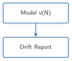
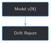

def summarize_version(model, tokenizer, eval_set: list[dict]) -> dict:
results = evaluate(model, tokenizer, eval_set)
texts = [e["output"] for e in eval_set]
return {
"exact_match": sum(r["exact_match"] for r in results),
"avg_overlap": sum(r["overlap_score"] for r in results) / len(results),
"perplexity": perplexity(model, tokenizer, texts),
}12 Detecting Drift Across Model Versions


Progress ████████████░ 12 / 13 · Estimated time: 30-40 min · Difficulty: 🟠 Intermediate
12.1 Learning objectives
By the end of this chapter, you will be able to:
- Run Chapter 11’s evaluation harness across more than one real model version and compare them directly, instead of judging each version in isolation
- Find a real case where two of Chapter 11’s own metrics disagree about whether a newer model version is better or worse
- Investigate a metric disagreement by reading the model’s actual generated text, instead of trusting either number alone
- Explain why a metric that stays flat across versions can hide a real change underneath it, and why a metric that moves needs a reason, not just a direction
12.2 Operational Problem
Sean, the production engineer who worried back in Chapter 7 about losing information by throwing away most of a shift’s log, has a new worry now that Chapter 11 gave the book a real evaluation harness: “We’re not going to fine-tune once and stop — we’ll retrain as new reports come in. How do I know a new version isn’t secretly worse than the one it’s replacing?”
12.3 Example: two checkpoints, two different verdicts
Run Chapter 11’s evaluation harness against Chapter 8’s first two real checkpoints — epoch 1 and epoch 2 of the exact same training run — and compare them directly:
Notecheckpoint_1 -> checkpoint_2, the same held-out set both times
checkpoint_1: exact_match=0 avg_overlap=0.354 perplexity=27.99
checkpoint_2: exact_match=0 avg_overlap=0.167 perplexity=25.40
checkpoint_1 -> checkpoint_2: exact_match=unchanged avg_overlap=regressed perplexity=improvedPerplexity says checkpoint_2 is a real improvement. The overlap score says it’s a real regression — average overlap dropped by more than half. Both numbers come from the exact same two checkpoints, the exact same 8 held-out questions, run the same way Chapter 11 already verified. Neither one is wrong. Neither one is the whole answer either.
12.4 Theory
TipEngineering Translation: drift / regression
Drift is a model’s behavior changing across versions or over time — often, but not always, for the worse. A regression is a specific kind of drift: something that used to work (or score well) stops working, in a version that’s supposed to be an improvement. Neither term says why — only that something changed and is worth a second look.
12.5 Why comparing one metric isn’t enough
The tempting shortcut: pick one metric, watch it across versions, and trust whatever it says. Chapter 11 already showed the risk of that with a single version’s evaluation; the checkpoint_1 → checkpoint_2 comparison above shows the same risk across versions, more sharply. Trusting perplexity alone here says “ship checkpoint_2, it’s better.” Trusting overlap alone says “checkpoint_2 is a regression, investigate before shipping it.” A real drift check needs more than one metric, and when they disagree, it needs a way to actually look at what changed — not just declare one metric the tiebreaker.
12.6 Implementation
12.6.1 Step 1: Summarize one model version across all three metrics
12.7 What problem are we solving?
Turn Chapter 11’s three separate metrics into a single, comparable summary per model version.
12.8 Inputs
- A loaded model version (a
PeftModelwrapping the base model) - The held-out evaluation set from Chapter 11
12.9 Expected Output
One dictionary per version: exact-match count, average overlap score, and perplexity.
12.10 What just happened?
evaluate and perplexity are Chapter 11’s own functions, reused unchanged. This step doesn’t add a new metric — it packages the three that already exist into a shape that’s easy to compare, version to version.
12.11 Production Reality
Real deployments version far more than a LoRA checkpoint — the retrieval index, the prompt template, even the base model itself can change between versions, and each is its own source of drift. This chapter only compares the fine-tuned adapter, holding everything else fixed, so a real difference is guaranteed to come from the adapter and nothing else.
12.11.1 Step 2: Compare two version summaries
12.12 What problem are we solving?
Turn two summaries into a per-metric verdict: did this metric improve, regress, or stay the same between versions?
12.13 Inputs
- Two
summarize_versionoutputs, one “before” and one “after”
12.14 Expected Output
A direction per metric — improved, regressed, or unchanged.
def compare_versions(before: dict, after: dict) -> dict:
def direction(before_value, after_value, lower_is_better=False):
if after_value == before_value:
return "unchanged"
improved = after_value < before_value if lower_is_better else after_value > before_value
return "improved" if improved else "regressed"
return {
"exact_match": direction(before["exact_match"], after["exact_match"]),
"avg_overlap": direction(before["avg_overlap"], after["avg_overlap"]),
"perplexity": direction(before["perplexity"], after["perplexity"], lower_is_better=True),
}12.15 What just happened?
compare_versions reports direction, not a verdict — it doesn’t decide whether checkpoint_2 is “good enough to ship.” That’s deliberate: collapsing three metrics into one automatic pass/fail would hide exactly the kind of disagreement Field Notes below investigates.
12.16 Production Reality
This function has no numeric threshold — any change in direction counts, even a tiny one. A production system would need a real threshold per metric (how much perplexity change is noise vs. signal), tuned against many more than 8 examples. This chapter keeps it simple enough to read every line of, at the cost of being oversensitive to small, possibly meaningless fluctuations.
12.16.1 Step 3: Run it across all 3 real checkpoints
12.17 What problem are we solving?
Apply Steps 1 and 2 to every checkpoint from Chapter 8’s real training run, not just two hand-picked ones.
12.18 Inputs
- Chapter 8’s 3 real checkpoints (
checkpoint_1,checkpoint_2,checkpoint_3) - The held-out evaluation set
12.19 Expected Output
A summary per checkpoint, and a direction comparison for every consecutive pair.
summaries = {}
for checkpoint_dir in checkpoints:
model, tokenizer = load_version(checkpoint_dir)
summaries[checkpoint_dir.name] = summarize_version(model, tokenizer, eval_set)
for before_name, after_name in zip(list(summaries), list(summaries)[1:]):
print(f"{before_name} -> {after_name}: {compare_versions(summaries[before_name], summaries[after_name])}")Running this exact code prints:
checkpoint_1 -> checkpoint_2: {'exact_match': 'unchanged', 'avg_overlap': 'regressed', 'perplexity': 'improved'}
checkpoint_2 -> checkpoint_3: {'exact_match': 'unchanged', 'avg_overlap': 'unchanged', 'perplexity': 'improved'}12.20 What just happened?
Two consecutive comparisons, two different outcomes. checkpoint_2 -> checkpoint_3 is the boring, healthy case: perplexity keeps improving, nothing regresses. checkpoint_1 -> checkpoint_2 is the one worth stopping for — a real metric disagreement, on real checkpoints, that Field Notes below investigates by reading what the model actually generated.
12.21 Practical exercise
🟢 Beginner
Try it yourself: run python code/chapter_12/detect_model_drift.py from inside book/ and compare its printed output to the transcripts above.
You’ll know it worked when: you see avg_overlap: regressed between checkpoint_1 and checkpoint_2, and you can explain in one sentence why that doesn’t automatically mean checkpoint_2 is a worse model.
12.22 Field notes
WarningField notes: same template, different template
Query: what checkpoint_1 and checkpoint_2 actually generated for the same 8 held-out questions, side by side.
Result: checkpoint_1 answers nearly every question with some version of “Production Casing Run down hole to 9,400’.” checkpoint_2 answers nearly every question with some version of “Production Casing Run Csg & Cement Rig up cement.” Neither checkpoint is actually answering the specific question asked — both fall back to one memorized-sounding template, the same “shape, not judgment” pattern Chapter 3, 9, and 11 already found.
Why: checkpoint_1’s template happens to share more real words (“down hole,” “run,” numbers matching some of the true answers) with this specific 8-question held-out set than checkpoint_2’s template does — not because checkpoint_1 understands the questions better, but because of which arbitrary generic phrase each epoch happened to settle into. The overlap score is measuring that coincidence, not a real improvement or decline in understanding.
Lesson: a regressing metric is a reason to look, not a verdict on its own. Here, looking revealed the “regression” wasn’t really about checkpoint_2 getting worse at the task — it was two different flavors of the same underlying limitation, one of which happened to score better against this particular held-out set by chance. A real production drift check would need to tell those two situations apart before deciding whether to roll a version back.
12.23 Challenge exercise
🟠 Intermediate
Challenge: does the same kind of metric disagreement show up comparing two completely different training regimes, not just adjacent epochs of one run? Compare Chapter 5’s 16-example fine-tune against Chapter 8’s “at scale” checkpoint using this chapter’s own compare_versions. A reference solution is at code/chapter_12/challenge/challenge.py — on a real run: Chapter 5 scores avg_overlap=0.5625, perplexity=112.28; Chapter 8 scores avg_overlap=0.167, perplexity=25.03 — the exact same disagreement pattern (avg_overlap: regressed, perplexity: improved) holds even across two entirely different fine-tunes, not just two epochs of the same one.
12.24 Key takeaways
- Two of Chapter 11’s own metrics can disagree about whether a newer model version is better —
checkpoint_2looked worse by overlap score and better by perplexity thancheckpoint_1, on the same held-out set. - A regressing metric is a signal to investigate, not a verdict. The real cause here was two different memorized templates, not a genuine loss of understanding between epochs.
compare_versionsreports direction, deliberately not a pass/fail verdict — collapsing a disagreement into one automatic answer would have hidden exactly the thing worth catching.- The same disagreement pattern (
avg_overlapregressed, perplexity improved) showed up comparing two completely different training regimes, not just two epochs of one run — this isn’t a one-off coincidence of this specific training run.
12.25 Repository files
| File | Purpose |
|---|---|
code/chapter_12/detect_model_drift.py |
Summarizes and compares model versions across Chapter 11’s three metrics |
code/chapter_12/challenge/challenge.py |
Reference solution: comparing Chapter 5’s and Chapter 8’s checkpoints as two real versions |
notebooks/chapter_12_explore.ipynb |
Interactive companion notebook |
CautionCHECKPOINT — Chapter 12
Tip✓ WHAT YOU BUILT
detect_model_drift.py — summarize_version() collapses Chapter 11’s three metrics into one comparable summary per model version; compare_versions() reports which metrics improved, regressed, or stayed flat between two versions, without collapsing a disagreement into a false single verdict.
12.26 What can you do now that you couldn’t do before?
You can compare two real model versions on more than one metric at once, catch the case where they disagree, and investigate why instead of trusting whichever number happens to look best.
12.27 Suggested next step
Coming up in Chapter 13: this chapter compares model versions that already exist — it doesn’t decide when a new one should get trained in the first place, or what to do when this chapter’s own comparison flags a disagreement. Chapter 13 closes that loop: retraining as new reports arrive, and running this exact comparison before deciding whether a new version actually replaces the one currently in use.